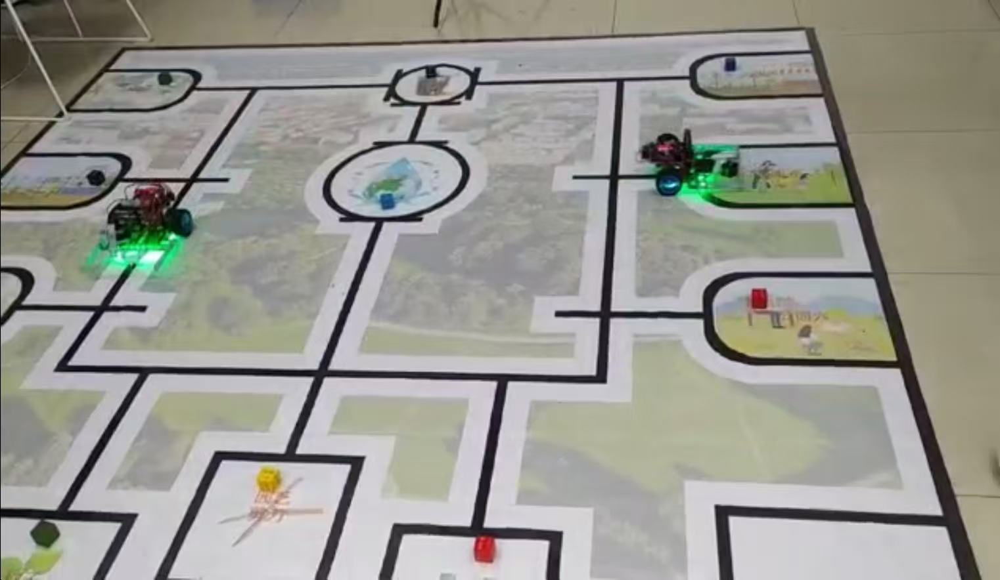

Garden Tending Robot
A small JS player replaying the watering/fertilizing routes the Python engine planned.
Loading the engine's data...

A small JS player replaying the watering/fertilizing routes the Python engine planned.
Loading the engine's data...
